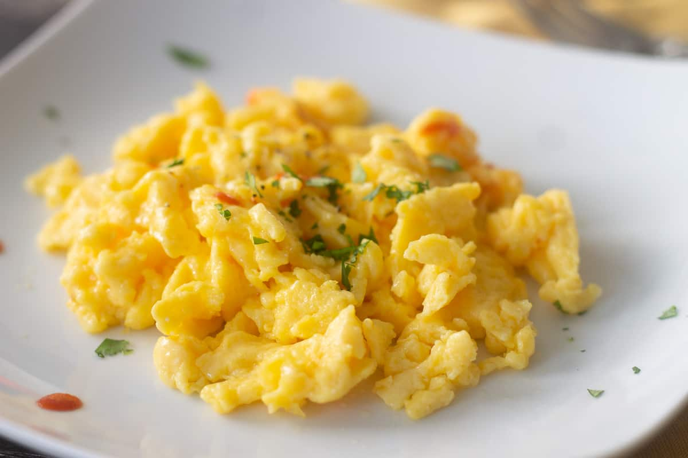

Scrambled Eggs

The Makings of Fantastic Scrambled Eggs!
Scrambled eggs are a great and simple recipe that anyone can make. There's a reason that this reliable yet satisfying dish is so popular.
Easily adjustable to match one's tastes by the addition or subtraction of simple seasonings, this dish can make breakfast quick, simple, and filling. After all, eggs are a complete protein!
Ingredients
- Eggs
- Olive oil
- Milk (of any sort)
- Salt
- Pepper
Steps
- Crack the eggs into a bowl and whisk thoroughly.
- Add a small amount of milk to thicken to preference.
- Brush a nonstick skillet with olive oil and warm to medium heat.
- Pour the eggs into the skillet.
- Allow to cook for a few seconds before prodding and flipping eggs intermittently with spatula over medium-low heat.
- Once eggs have set to preference, add salt and pepper to taste and serve.